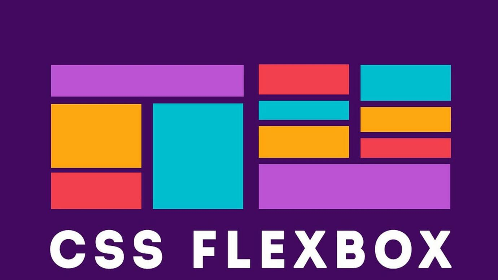
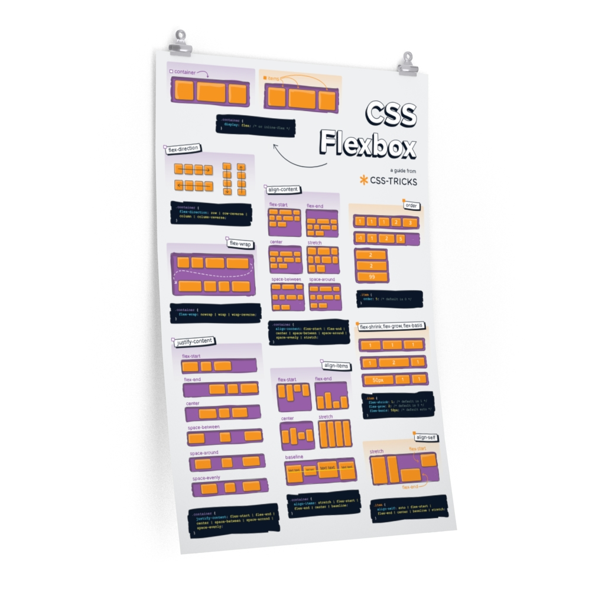

So far everything on your pages has stacked. This week Flexbox puts things side by side: a proper horizontal nav bar, a row of cards, a sidebar next to content. Then your skills portfolio goes on the web with an address you can send to anyone. Last teaching week before Care Week.
This session
Flexbox

Flexbox (Flexible Box Layout) is a modern CSS layout system that makes it easy to arrange elements in rows or columns. Before Flexbox, creating side-by-side layouts was complicated and often required workarounds. Flexbox makes this simple and intuitive.
What Problem Does Flexbox Solve?
Remember how we learned that block elements like
<div> stack vertically by default? What if you
want two divs to sit side-by-side? Flexbox makes this easy:
/* Without Flexbox - divs stack vertically */
<div class="box">Box 1</div>
<div class="box">Box 2</div>
<div class="box">Box 3</div>
/* Result: Boxes stack on top of each other *//* With Flexbox - divs sit side-by-side */
.container {
display: flex;
}
<div class="container">
<div class="box">Box 1</div>
<div class="box">Box 2</div>
<div class="box">Box 3</div>
</div>
/* Result: Boxes sit next to each other horizontally */Key Flexbox Concepts
Flexbox involves two types of elements:
-
Flex Container - The parent element with
display: flex; - Flex Items - The direct children of the flex container
Live Example - Basic Flexbox:
Notice how just adding display: flex; to the container
changes the layout from vertical stacking to horizontal
side-by-side!
Essential Flexbox Properties
flex-direction
Controls the direction flex items flow. Default is
row (horizontal):
.container {
display: flex;
flex-direction: row; /* left to right (default) */
flex-direction: row-reverse; /* right to left */
flex-direction: column; /* top to bottom */
flex-direction: column-reverse; /* bottom to top */
}Live Example - Flex Direction:
justify-content
Controls how items are distributed along the main axis (horizontally for rows):
.container {
display: flex;
justify-content: flex-start; /* items at start (default) */
justify-content: flex-end; /* items at end */
justify-content: center; /* items centred */
justify-content: space-between; /* space between items */
justify-content: space-around; /* space around items */
justify-content: space-evenly; /* equal space between */
}Live Example - Justify Content:
align-items
Controls how items are aligned along the cross axis (vertically for rows):
.container {
display: flex;
align-items: stretch; /* items stretch to fill (default) */
align-items: flex-start; /* items at top */
align-items: flex-end; /* items at bottom */
align-items: center; /* items centred vertically */
}Live Example - Align Items:
gap
Creates space between flex items without using margins (modern and convenient!):
.container {
display: flex;
gap: 20px; /* 20px space between all items */
gap: 10px 20px; /* 10px vertical, 20px horizontal */
}Live Example - Gap:
Controlling Individual Flex Items
flex
The flex property controls how much space a flex item
should take up relative to other items:
.container {
display: flex;
}
/* Each box takes equal space */
.box {
flex: 1;
}
/* Main content takes twice as much space as sidebars */
.sidebar {
flex: 1;
}
.main-content {
flex: 2;
}Live Example - Flex Property:
flex: 1
flex: 2
flex: 1
Notice how flex: 2 makes the main content take up twice
as much space as the sidebars with flex: 1.
Understanding flex Values
The flex property is actually shorthand for three
properties, but for beginners, think of it like this:
-
flex: 1;- "Take up 1 unit of available space" -
flex: 2;- "Take up 2 units of available space" -
flex: 0;- "Don't grow, stay at natural size"
If you have three items with flex: 1, they each get
1/3 of the space. If one has flex: 2 and two have
flex: 1, the first gets 2/4 (half) and the others get
1/4 each.
Exercise 1 - Create a card layout with Flexbox
Open the exercise-2-cards folder in today's class-exercises.zip file. Follow the TODO instructions to complete the card layout.
Practice using Flexbox to create a responsive card layout. You'll arrange cards side-by-side and control their spacing and alignment.
In this exercise you'll practice:
- Creating a flex container to hold cards
- Using justify-content and align-items to position cards
- Adding gap for spacing between cards
- Using flex-wrap to make cards wrap to new lines
Responsive Flexbox with flex-wrap
By default, flex items try to fit on one line. Use
flex-wrap to allow items to wrap to new lines on
smaller screens:
.container {
display: flex;
flex-wrap: wrap; /* items wrap to new lines */
flex-wrap: nowrap; /* items stay on one line (default) */
gap: 20px;
}
.item {
flex: 1 1 300px; /* grow, shrink, minimum 300px width */
}Live Example - Flex Wrap (resize your browser):
Common Flexbox Layout Patterns
Here are some typical uses for Flexbox:
- Navigation bars - Horizontal menu items with space between
- Card grids - Equal-width cards that wrap responsively
- Sidebar layouts - Fixed sidebar with flexible main content
- Centring content - Both horizontally and vertically
- Footer alignment - Stick footer to bottom of page
Practical Example: Two-Column Layout
Let's create a classic two-column layout with a sidebar and main content area:
/* HTML */
<div class="page-layout">
<aside class="sidebar">
<h3>Sidebar</h3>
<ul>
<li>Link 1</li>
<li>Link 2</li>
<li>Link 3</li>
</ul>
</aside>
<main class="main-content">
<h2>Main Content</h2>
<p>This is the main content area...</p>
</main>
</div>
/* CSS */
.page-layout {
display: flex;
gap: 30px;
max-width: 1200px;
margin: 0 auto;
padding: 20px;
}
.sidebar {
flex: 0 0 250px; /* Don't grow, don't shrink, stay 250px */
background: #f8f9fa;
padding: 20px;
border-radius: 8px;
}
.main-content {
flex: 1; /* Take up remaining space */
background: white;
padding: 20px;
}Live Example - Two-Column Layout:
Main Content Area
This is the main content area that takes up the remaining space. The sidebar stays at a fixed 200px width while this area grows to fill the rest.
This is a classic layout pattern used in many web applications, dashboards, and blogs.
Exercise 2 - Build a navigation bar with Flexbox
Create a professional navigation bar using Flexbox. You'll practice aligning items, spacing them appropriately, and making the navigation responsive.
In this exercise you'll practice:
- Creating a horizontal navigation with flex
- Using justify-content: space-between; to position logo and menu
- Using align-items: center; to vertically align items
- The last TODO uses a media query, which we cover later in the module. Have a go, or leave it.
Open the exercise-3-navigation folder in today's class-exercises.zip file. Follow the TODO instructions to complete the navigation bar.
Hint - Nested Flex Containers
You can have flex containers inside flex containers! For example, the nav itself can be a flex container, and the menu list inside it can also be a flex container:
.navbar {
display: flex;
justify-content: space-between;
}
.menu {
display: flex;
gap: 20px;
}Flexbox Quick Reference
Container Properties (apply to parent)
-
display: flex;- Makes element a flex container -
flex-direction:- row, column, row-reverse, column-reverse -
justify-content:- flex-start, center, flex-end, space-between, space-around -
align-items:- flex-start, center, flex-end, stretch gap:- Space between itemsflex-wrap:- wrap, nowrap
Item Properties (apply to children)
-
flex:- How much space item should take (e.g., 1, 2, 0) flex: 1 1 300px;- Grow, shrink, base width-
flex: 0 0 250px;- Fixed width (don't grow or shrink)
Further Flexbox Resources
Here are some excellent resources to help you master Flexbox:
🎮 Flexbox Froggy
Help frogs reach their lily pads using Flexbox properties. A fun, interactive game to practice what you've learned!

📖 CSS-Tricks Flexbox Guide
A comprehensive visual reference poster showing all Flexbox properties. This is a handy visual reference of all the flexbox properties - perfect to bookmark or print out!
Break
Halfway
After the break your work goes on the internet.
Going live
Until now your pages have only existed on your own laptop, opened as files. Nobody else can see them, and a few things (embedded YouTube players, for one) don't work that way. A web page belongs on a web server. Getting it there used to be fiddly; now it's drag and drop.
Option 1: Netlify Drop
Netlify hosts static sites (HTML, CSS, images: exactly what you have) for free.
- Sign up for a free account at netlify.com.
- Go to app.netlify.com/drop.
-
Drag your whole skills-portfolio folder onto the
page. Netlify uploads it and gives you an address ending in
.netlify.app. - Open the address on your phone. That's your site, on the actual internet.
- To update it, open the site in your Netlify dashboard, go to Deploys, and drag the folder again.
You can rename the random address to something sensible in Site settings.
Option 2: GitHub Pages
GitHub is where most of the world's code lives, and it will host a static site from a repository for free. It is a little more work and a lot more useful to know, because you will meet GitHub again on later modules and in any job that involves code.
- Sign up at github.com.
-
Create a new public repository called
skills-portfolio. - Use "Add file, then Upload files" to drag in the contents of your skills-portfolio folder (the files and the images folder, not the folder itself), and commit.
-
In the repository's Settings, choose Pages, set the source to
Deploy from a branch, pick
mainand save. -
After a minute the address appears at the top of that page:
https://your-username.github.io/skills-portfolio/
Uploading the files again replaces them. Later on you'll learn to do this from VS Code instead of the website.
Why the folder rules mattered
Your laptop doesn't care whether a file is called
Photo 1.JPG or photo-1.jpg. A web server
does. If an image or a link works on your laptop and not on the
live site, the name is the first thing to check. Also make sure the
page you want people to land on is called index.html:
that is the file a server shows when someone visits the folder.
Which should I use?
Netlify Drop for now: it takes two minutes and you'll see your site
live before the session ends. Try GitHub in your own time. Either
one satisfies the portfolio requirement. Whichever you pick, paste
the live address into a comment at the top of your
index.html so your tutor can find it.
Portfolio Task 3 finishes: cards, a nav bar and a live site
Open attractions.html and styles.css. This is the last week on this page.
Requirements
-
Nav bar: make the
ulinside yournava flex container so the links sit in a row. Usegapfor spacing andjustify-contentto place them. Do the same on your about-me and business pages; they share the stylesheet, so this may already have happened. -
Cards: wrap your ten attractions in a container
with a class of
attractions. Make it a flex container withflex-wrap: wrapand agap, and give each.attractionflex: 1 1 250pxso that on a phone they still stack and on a wider screen they form a row of cards. You will need to raise the page'smax-widthfrom 600px to something like 1000px to see it. -
Header: use Flexbox to put the site title and
the nav side by side in the header, vertically centred with
align-items: center. - Optional stretch: a custom background graphic for the header, made in Illustrator, exported at a sensible size (under 500KB), with readable text on top.
- Go live: publish your whole skills-portfolio folder with Netlify Drop or GitHub Pages. Check every page and every link on your phone. Paste the address in a comment at the top of index.html.
- Validate all three pages one more time. Fix the image names that broke when you went live; there will be one.
Common mistakes
- Putting
display: flexon the items instead of their container - Forgetting
flex-wrap: wrap, so ten cards squash into one unreadable row - Uploading the folder inside another folder, so the site address shows a directory listing instead of index.html
- Capital letters in image names that worked locally and vanish online
Care Week is next week, with no class. Use it to finish all three tasks and get them online. The next session opens with a quick check of Portfolio Tasks 1 to 3, and then you start the big one.